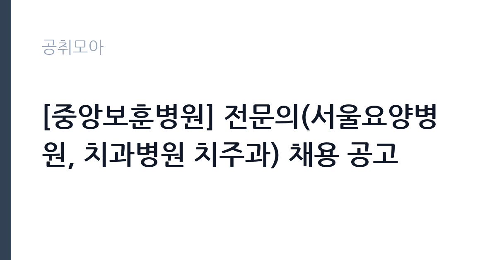

[공공기관] [중앙보훈병원] 전문의(서울요양병원, 치과병원 치주과) 채용 공고
한국보훈복지의료공단 · 서울 · 마감 2026-10-07 (D-14) · 출처 잡알리오

한눈에 보는 모집 조건
| 기관 | 한국보훈복지의료공단 |
|---|---|
| 공고명 | [중앙보훈병원] 전문의(서울요양병원, 치과병원 치주과) 채용 공고 |
| 고용형태 | 정규직 |
| 근무지 | 서울 |
| 게시일 | 2026-09-23 |
| 마감일 | 2026-10-07 (D-14) |
지원자격, 이렇게 읽으세요
- 공공기관 채용공시
- 세부 조건은 원문 공고문 확인
서울요양병원 분야는 전문의 자격증 소지자로서 야간과 휴일 당직근무가 가능한 분이 지원할 수 있으며 연령 제한이 없습니다. 치과병원 치주과 분야는 공단 정년인 60세에 도달하지 않은 분 가운데 치과의사면허증과 치주과 전문의 자격증을 취득하였거나 취득 예정인 분이 대상입니다. 중앙보훈병원 수련과 근무 경력자는 우대합니다. 공단 인사규정의 결격사유에 해당하지 않아야 합니다.
이 공고의 포인트
이 공고의 매력은 서울 근무 공공병원 정규직이라는 점입니다. 보훈병원은 국가유공자와 보훈가족 진료를 담당하는 공공의료기관으로 민간병원과 다른 안정적인 진료 환경을 갖추고 있습니다. 서울요양병원 분야에 연령 제한이 없다는 점도 경력 전문의에게는 문턱을 낮추는 요소입니다. 치주과 분야는 수련과 근무 경력자 우대가 있어 내부 인연이 있는 분께 유리합니다.
전형은 어떻게 진행되나
접수는 공단 채용 절차에 따라 진행되며 마감일은 2026년 10월 7일입니다. 서류심사와 면접심사를 거쳐 최종합격자를 선발하는 구조로 예상되며 세부 전형 단계와 제출서류, 접수 방법은 원문 공고문에서 확인하시기 바랍니다. 전문의 자격증과 면허증 등 필수 증빙은 미리 준비하시는 것이 좋습니다.
원문에서 확인한 전형 방식
[공통] ·(필수) 공단 인사규정 제18조에 정한 결격사유에 해당하지 않는 자 [서울요양병원] ·(필수) 전문의 자격증 소지자 ·(필수) 야간 및 휴일 당직근무 가능한 자(당직의 결원 시) ※ 연령 제한 없음 [치과병원 치주과] ·(필수) 공단 인사규정 제44조에 따른 정년(60세)에 도달하지 않은 자 ·(필수) 치과의사면허증 및 치주과 전문의 자격증 취득(예정)자 ·(우대) 중앙보훈병원 수련 및 근무경력자
이런 분께 추천해요
- 전문의 자격증을 보유하고 공공병원에서 안정적으로 진료하고 싶은 경력 의사께 적합합니다.
- 치주과 전문의로서 보훈병원 진료와 교육 환경에 관심 있는 분께 추천합니다.
- 당직근무가 가능하고 서울 요양병원 진료에 뜻이 있는 전문의께 어울립니다.
지원 전 체크리스트
- 지원 분야의 필수 자격증과 면허 요건을 확인했습니다.
- 서울요양병원 분야의 당직근무 가능 여부를 본인 일정과 대조했습니다.
- 치주과 분야의 정년 요건과 우대사항을 확인했습니다.
- 마감일과 접수 방법, 제출서류를 원문에서 확인했습니다.
모집 일정과 제출 타이밍
마감일은 10월 7일로 접수기간이 약 2주입니다. 자격증 사본과 경력증명서 등 발급에 시간이 걸리는 서류가 있으므로 접수 첫 주에 준비를 마치시는 것을 권합니다. 면접 일정은 서류심사 이후 개별 안내될 예정이니 연락 가능한 수단을 유지하시기 바랍니다.
직무 이해하기: 공공기관
중앙보훈병원은 서울 강동구에 위치한 보훈의료 중추 기관으로 국가유공자와 유가족, 일반 환자를 진료합니다. 서울요양병원은 장기요양과 재활 진료를 담당하며 당직 체계를 운영합니다. 치과병원 치주과는 임플란트와 잇몸질환 등 전문 진료를 수행합니다. 공공병원 특유의 협진 체계와 교육, 연구 기능도 함께 갖추고 있습니다.
자기소개서 작성 팁
전문의 채용 자기소개서에서는 임상 경험과 진료 철학을 구체적으로 쓰시는 것이 좋습니다. 다룬 질환군과 시술 건수, 협진 경험 등 수치로 보여줄 수 있는 실적을 중심으로 서술하시기 바랍니다. 보훈의료의 공공성에 대한 이해와 기여 의지를 함께 밝히시면 설득력이 높아집니다.
면접 준비 포인트
면접에서는 임상 판단력과 응급 대응 경험을 질문받을 가능성이 큽니다. 대표적인 증례를 준비하시고 치료 방침을 정한 근거를 논리적으로 설명하는 연습을 권합니다. 공공병원 특성상 협업과 윤리 의식에 대한 질문도 예상되니 관련 경험을 정리해 두시기 바랍니다.
급여·근무조건 읽는 법
전문의 보수는 공단 보수규정과 직급 체계에 따라 결정되며 이번 공고에 공개된 고정 금액은 없습니다. 정확한 기본급과 수당, 당직비 등은 원문 공고문에서 확인하시기 바랍니다. 공공병원 전문의는 민간병원 대비 기본급이 낮을 수 있으나 정년 보장과 안정적인 근무환경이 장점으로 꼽힙니다. 실수령액은 당직 횟수와 수당에 따라 달라지므로 근로조건 안내를 꼼꼼히 확인하시기 바랍니다.
자주 묻는 질문
- 서울요양병원 분야에 연령 제한이 있나요?
공고문에 연령 제한 없음이 명시되어 있습니다. 전문의 자격증 소지와 당직근무 가능 여부가 핵심 요건이니 원문에서 확인하시기 바랍니다. - 치주과 분야는 자격증 취득 예정자도 지원할 수 있나요?
치과의사면허증과 치주과 전문의 자격증 취득 예정자도 지원할 수 있다고 안내되어 있습니다. 임용 시점까지 취득이 가능한지 일정을 확인하시기 바랍니다. - 우대사항은 무엇인가요?
중앙보훈병원 수련과 근무 경력자가 우대 대상입니다. 해당 경력이 있으면 증빙서류를 빠짐없이 준비하시기 바랍니다.
함께 보면 좋은 공고
[공공기관] 발전공기업 통합실무지원단장 채용공고 — 마감 2026-10-08[공공기관] (재)인천광역시부평구문화재단 대표이사 채용 공고 — 마감 2026-10-13[공공기관] [설악산] 설악산국립공원 기간제 직원[환경관리(한시인력)] 채용 공고 — 마감 2026-10-01출처: 잡알리오 공개정보를 바탕으로 공취모아가 정리한 안내글입니다. 모집 조건·일정은 변경될 수 있으니 지원 전 반드시 원문 공고문을 확인하세요. 본 글은 정보 제공용이며 합격을 보장하지 않습니다.